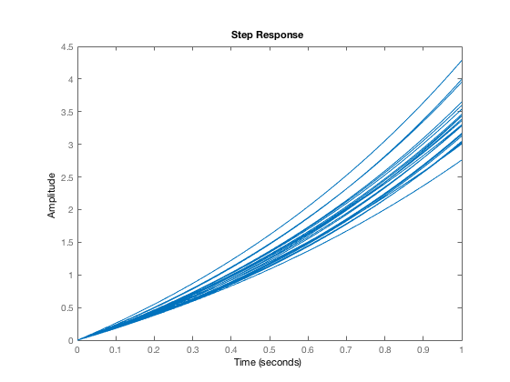
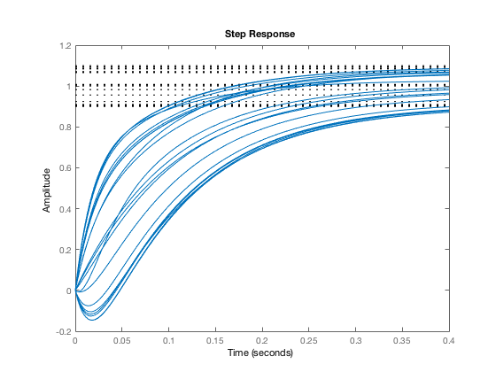
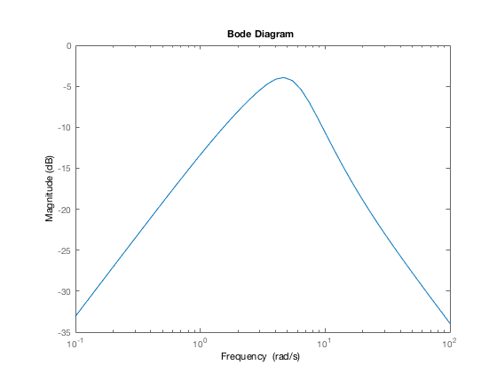
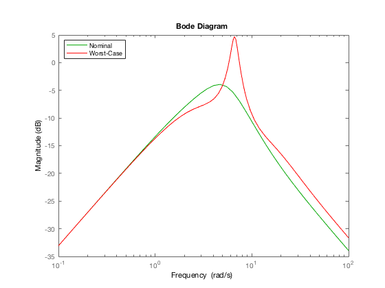
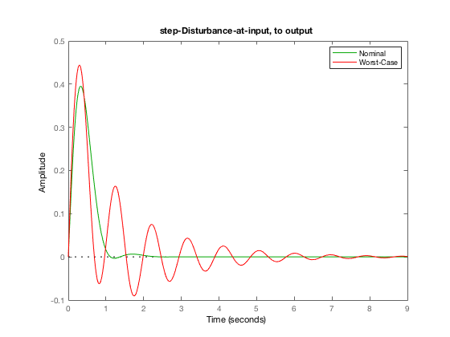

Worst-Case Robustness Analysis in Uncertain Linear Systems
Contents
Attribution
UC Berkeley, ME C231B/EECS C220C, Spring 2017
Problem Data: Uncertain, unstable plant
gamma = ureal('gamma',2, 'Range', [1.7 2.6]); beta = ureal('beta',1, 'Range', [0.8 1.1]); P = tf(gamma, [1 -beta]); Tfinal = 1; step(P, Tfinal);
Problem Data: Uncertain actuator
tauAct = 0.1; % time-constant nomAct = tf(1, [tauAct 1]); Delta = ultidyn('Delta',[1 1], 'type', 'gainbounded'); lowFreqMag = 0.1; unityMagAt = 20; highFreqMag = 3; tauBound = makeweight(lowFreqMag, unityMagAt, highFreqMag); uncAct = nomAct*(1 + tauBound*Delta); step(uncAct, 0.4);
PI control logic
Design is based on desired closed-loop pole location, ignoring actuator dynamics.
wnDesign = 3; % desired natural frequency of closed-loop poles xiDesign = 0.8; % desired damping ratio of closed-loop poles KP = (2*xiDesign*wnDesign + beta.Nominal)/gamma.Nominal; KI = wnDesign^2/gamma.Nominal; C = tf([KP KI],[1 0]);
Properties/Plots of Nominal closed-loop
Form closed-loop system (uncertain)
R = feedback(P, uncAct*C);
% Check nominal stability
isstable(R.NominalValue)
ans = logical 1
Nominal disturbance-rejection (frequency-domain)
bodemag(R.NominalValue);
Peak (across frequency) to d-to-e frequency-response magnitude
norm(R.NominalValue, inf)
ans =
0.6362
Robust stability (robuststab)
[StabMargin, DestabilizingUncertainty, Report] = robuststab(R); StabMargin
StabMargin =
struct with fields:
LowerBound: 1.4232
UpperBound: 1.4232
DestabilizingFrequency: 8.2330
Report
Report =
8×87 char array
'System is robustly stable for the modeled uncertainty. '
' -- It can tolerate up to 142% of the modeled uncertainty. '
' -- There is a destabilizing perturbation amounting to 142% of the modeled uncertainty.'
' -- This perturbation causes an instability at the frequency 8.23 rad/seconds. '
' -- Sensitivity with respect to each uncertain element is: '
' 98% for Delta. Increasing Delta by 25% decreases the margin by 24.5%. '
' 2% for beta. Increasing beta by 25% decreases the margin by 0.5%. '
' 58% for gamma. Increasing gamma by 25% decreases the margin by 14.5%. '
pole(usubs(R,DestabilizingUncertainty))
ans = -60.0087 + 0.0000i -14.9314 +16.8396i -14.9314 -16.8396i 0.0000 + 8.2330i 0.0000 - 8.2330i -2.6079 + 2.2534i -2.6079 - 2.2534i -2.1578 + 0.0000i
Robust stability (robstab)
In 2016b, there is a more sophisticated robust stability analysis function, named robstab. In the homework/lab we will look at how this routine can fix some subtle reliability problems that occur in robuststab. Here we simply illustrate its use, mimicing the results above.
have16b = true; if have16b rOpts = robOptions('Display','on','Sensitivity','on'); [SM,DU] = robstab(R,rOpts); end
Computing peak... Percent completed: 100/100
System is robustly stable for the modeled uncertainty.
-- It can tolerate up to 142% of the modeled uncertainty.
-- There is a destabilizing perturbation amounting to 142% of the modeled uncertainty.
-- This perturbation causes an instability at the frequency 7.94 rad/seconds.
-- Sensitivity with respect to each uncertain element is:
64% for Delta. Increasing Delta by 25% decreases the margin by 16%.
1% for beta. Increasing beta by 25% decreases the margin by 0.25%.
36% for gamma. Increasing gamma by 25% decreases the margin by 9%.
Worst-Case Gain analysis
[wcGain, OffendingUncertainty] = wcgain(R); wcGain
wcGain =
struct with fields:
LowerBound: 1.7188
UpperBound: 1.7226
CriticalFrequency: 6.6220
bodemag(R.NominalValue, 'g', usubs(R,OffendingUncertainty), 'r') legend('Nominal','Worst-Case', 'location', 'best')
Time-domain exploration of wcGain calculation
step (R.NominalValue, 'g', usubs(R,OffendingUncertainty), 'r') title('step-Disturbance-at-input, to output') legend('Nominal','Worst-Case', 'location', 'best')
Conclusion
Illustration of the use of some tools for modeling uncertain systems, and analyzing their worst-case behavior.
Attribution
Copyright 2016-17, Andy Packard. This work is licensed under the Creative Commons Attribution-NonCommercial-ShareAlike 3.0 Unported License. To view a copy of this license, visit http://creativecommons.org/licenses/by-nc-sa/3.0/ or send a letter to Creative Commons, 444 Castro Street, Suite 900, Mountain View, California, 94041, USA.
File Information
disp(mfilename)
WorstCaseAnalysisIntroduction